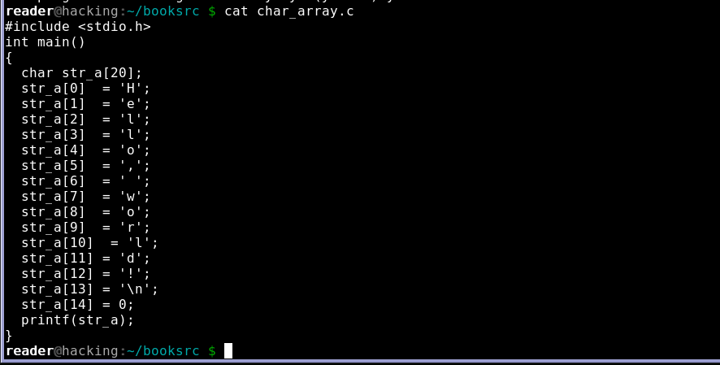
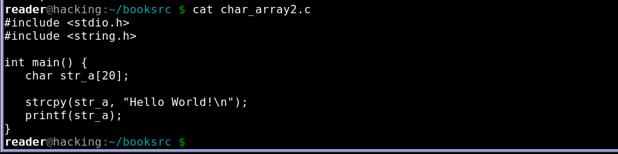
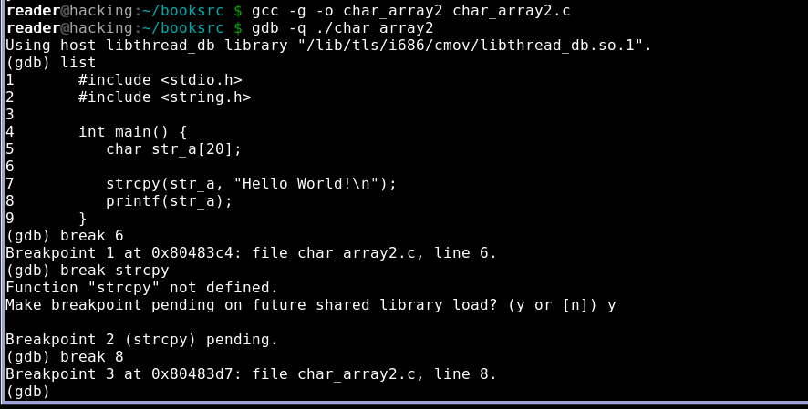
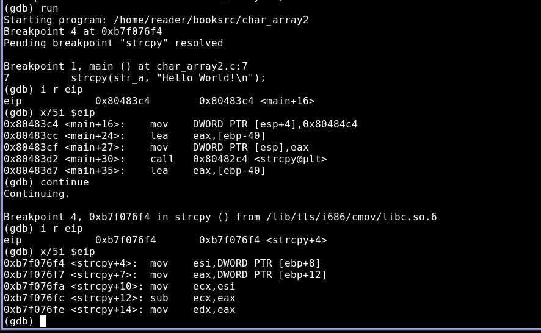
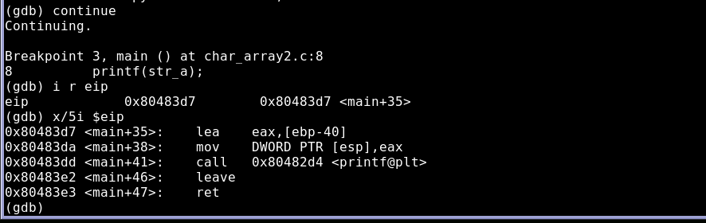
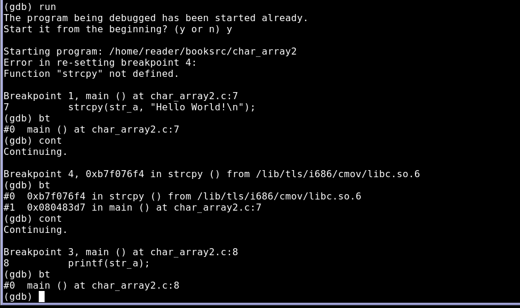

字符串
1. 字符数组列子 char_array.c
2. 字符数组列子, char_array2.c
3. 使用GDB来分析这个程序,在调用之前,之内，之后设置断点,调试器将在每个断点暂停程序的执行，为我们提供检查寄存器和内存的机会，strcpy()函数的代码来自一个共享库，因此在程序执行之前，实际上无法设置此函数内的断点.
4. 当程序运行时，会解析strcpy()断点,在每个断点处，我们都将查看EIP及其指向的指令，注意，在中间断点处，EIP的内存位置与其他两个断点处是不同的,中间断点的EIP在strcpy()函数中,而其他两个断点的EIP在main函数中，需要指出的是，EIP能从main()函数代码转移到strcpy()代码,然后返回,每次调用函数时,都会在称为栈的数据结构中保存一条记录，栈使得EIP可通过函数调用的长链返回.
 5. GDB使用bt命令进行回溯栈,下面输出中，每个断点处都显示来栈的回溯,在中间断点处，栈回溯显示了栈中的strcpy()的调用记录,另外strcpy()函数的地址稍有不同,这是用来防止漏洞攻击的.
